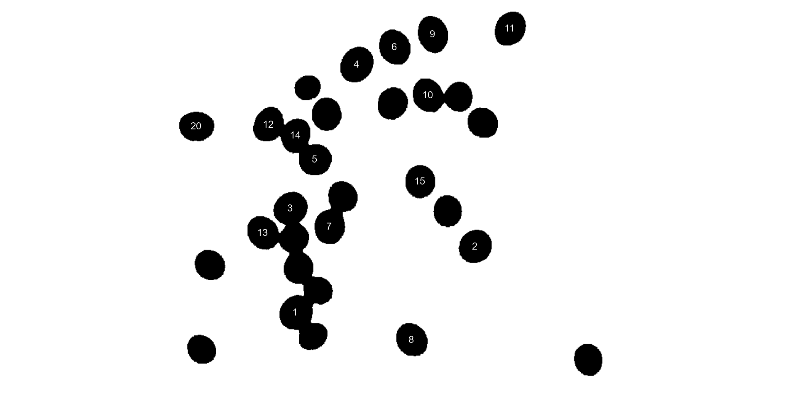

Analyzing objects in an image
Tiago Olivoto
2023-01-20
Source:vignettes/analyze_objects.Rmd
analyze_objects.RmdGetting started
The function analyze_objects() can be used to count
objects in an image. Let us start with a simple example with the image
object_300dpi.png available on the GitHub
page. To facilitate the image importation from this folder, a helper
function image_pliman() is used.
library(pliman)
#> |==========================================================|
#> | Tools for Plant Image Analysis (pliman 1.2.0) |
#> | Author: Tiago Olivoto |
#> | Type 'citation('pliman')' to know how to cite pliman |
#> | Type 'vignette('pliman_start')' for a short tutorial |
#> | Visit 'http://bit.ly/pkg_pliman' for a complete tutorial |
#> |==========================================================|
img <- image_pliman("objects_300dpi.jpg", plot = TRUE)
The above image was produced with Microsoft PowerPoint. It has a known resolution of 300 dpi (dots per inch) and shows four objects
- Larger square: 10 x 10 cm (100 cm2)
- Smaller square: 5 x 5 cm (25 cm2)
- Rectangle: 4 x 2 cm (8 cm2)
- Circle: 3 cm in diameter (~7.08 cm2)
To count the objects in the image we use
analyze_objects() and inform the image object (the only
mandatory argument). First, we use image_binary() to see
the most suitable index to segment the objects from the background. By
default, the R, G, B (first row) and their normalized values (second
row) are used.
image_binary(img)Analyzing objects
img_res <-
analyze_objects(img,
marker = "area",
index = "B") # use blue index to segmentAdjusting object measures
The results were stored in img_res. Since there is no
scale declared in the above example, we have no idea about the actual
area of the objects in cm2, only in pixels. In this case, we
use get_measures() to adjust the measures from pixels to
metric units.
There are two main ways of adjusting the object measures (from pixels to cm, for example). The first one is to declare the known area, perimeter, or radius of a given object. The measure for the other objects will be then computed by a simple rule of three. The second one is by declaring a known image resolution in dpi (dots per inch). In this case, the perimeter, area, and radius will be adjusted by the informed dpi.
Declaring a known value
Since we have known the area of the larger square (object 1), let us adjust the area of the other objects in the image using that.
get_measures(img_res,
id = 1,
area ~ 100)
#> -----------------------------------------
#> measures corrected with:
#> object id: 1
#> area : 100
#> -----------------------------------------
#> Total : 40.002
#> Average : 13.334
#> -----------------------------------------
#> id x y area area_ch perimeter radius_mean radius_min
#> 2 2 1737.502 453.0000 25.00000 24.91547 19.94781 2.86407 2.49154
#> 3 3 1737.583 1296.3199 7.05000 7.05129 10.08545 1.49415 1.48180
#> 4 4 1737.504 939.0042 7.95238 7.90183 11.91573 1.66905 0.98858
#> radius_max radius_sd diam_mean diam_min diam_max major_axis minor_axis
#> 2 3.52806 0.31428 5.72814 4.98308 7.05613 5.77837 5.76859
#> 3 1.51111 0.00412 2.98830 2.96360 3.02222 2.99790 2.99424
#> 4 2.22695 0.42384 3.33811 1.97716 4.45389 4.61473 2.29757
#> caliper length width radius_ratio theta eccentricity form_factor
#> 2 7.05314 4.99578 4.98731 1.41602 1.57080 0.99746 0.78951
#> 3 3.01024 3.00232 3.00006 1.01978 0.05525 0.98427 0.87098
#> 4 4.44947 3.99009 1.98526 2.25267 -0.00004 0.34695 0.70383
#> narrow_factor asp_ratio rectangularity pd_ratio plw_ratio solidity convexity
#> 2 1.41182 1.00170 0.99662 2.82822 1.99816 1.00339 0.74998
#> 3 1.00264 1.00076 1.27761 3.35038 1.68024 0.99982 0.90798
#> 4 1.11513 2.00985 0.99610 2.67801 1.99415 1.00640 0.83514
#> elongation circularity circularity_haralick circularity_norm coverage asm
#> 2 0.00169 15.91660 9.11304 1.27090 0.10685 0.91283
#> 3 0.00076 14.42784 362.58570 1.15423 0.03013 0.81916
#> 4 0.50245 17.85434 3.93795 1.42989 0.03399 0.84945
#> con cor var idm sav sva sen ent dva
#> 2 0.05116 0.73181 1.09538 0.98678 21.90019 475.2892 0.10664 0.11591 0.05116
#> 3 0.10619 0.82167 1.29774 0.97172 21.76919 465.7636 0.21278 0.24122 0.10619
#> 4 0.08295 0.78934 1.19689 0.97767 21.81180 469.3793 0.16290 0.18310 0.08295
#> den f12 f13
#> 2 0.05419 0.51814 0.27965
#> 3 0.10011 0.53546 0.40225
#> 4 0.08076 0.55859 0.36414The same can be used to adjust the measures based on the perimeter or radius. Let us adjust the perimeter of objects by the perimeter of object 2 (20 cm).
get_measures(img_res,
id = 2,
perimeter ~ 20)
#> -----------------------------------------
#> measures corrected with:
#> object id: 2
#> perimeter : 20
#> -----------------------------------------
#> Total : 62.096
#> Average : 20.699
#> -----------------------------------------
#> id x y area area_ch perimeter radius_mean radius_min
#> 1 1 669.0004 798.0004 100.52398 100.35410 40.03747 5.74771 5.00779
#> 3 3 1737.5825 1296.3199 7.08694 7.08824 10.11184 1.49806 1.48568
#> 4 4 1737.5042 939.0042 7.99405 7.94324 11.94690 1.67342 0.99117
#> radius_max radius_sd diam_mean diam_min diam_max major_axis minor_axis
#> 1 7.07759 0.63049 11.49542 10.01558 14.15519 11.57721 11.57714
#> 3 1.51507 0.00413 2.99612 2.97135 3.03013 3.00575 3.00207
#> 4 2.23277 0.42495 3.34684 1.98233 4.46555 4.62681 2.30359
#> caliper length width radius_ratio theta eccentricity form_factor
#> 1 14.15518 14.15516 14.14914 1.41332 0.78427 0.99936 0.78804
#> 3 3.01812 3.01018 3.00791 1.01978 0.05525 0.98427 0.87098
#> 4 4.46111 4.00053 1.99046 2.25267 -0.00004 0.34695 0.70383
#> narrow_factor asp_ratio rectangularity pd_ratio plw_ratio solidity convexity
#> 1 1.00000 1.00043 1.99239 2.82847 1.41454 1.00169 0.75034
#> 3 1.00264 1.00076 1.27761 3.35038 1.68024 0.99982 0.90798
#> 4 1.11513 2.00985 0.99610 2.67801 1.99415 1.00640 0.83514
#> elongation circularity circularity_haralick circularity_norm coverage asm
#> 1 0.00043 15.94644 9.11629 1.27113 0.42739 0.94551
#> 3 0.00076 14.42784 362.58570 1.15423 0.03013 0.81916
#> 4 0.50245 17.85434 3.93795 1.42989 0.03399 0.84945
#> con cor var idm sav sva sen ent dva
#> 1 0.04495 0.72187 1.08080 0.99363 21.93105 478.2220 0.06912 0.07526 0.04495
#> 3 0.10619 0.82167 1.29774 0.97172 21.76919 465.7636 0.21278 0.24122 0.10619
#> 4 0.08295 0.78934 1.19689 0.97767 21.81180 469.3793 0.16290 0.18310 0.08295
#> den f12 f13
#> 1 0.02892 0.67926 0.27306
#> 3 0.10011 0.53546 0.40225
#> 4 0.08076 0.55859 0.36414Declaring the image resolution
If the image resolution is known, all the measures will be adjusted
according to this resolution. Let us to see a numerical example with
pixels_to_cm(). This function converts the number of pixels
(\(px\)) to cm, considering the image
resolution in \(dpi\), as follows:
\(cm = px \times (2.54/dpi)\). Since we
know the number of pixels of the larger square, its perimeter in cm is
given by
# number of pixels for the highest square perimeter
ls_px <- img_res$results$perimeter[1]
pixels_to_cm(px = ls_px, dpi = 300)
#> [1] 39.9294The perimeter of object 1 adjusted by the image resolution is very
close to the true (40 cm). Bellow, the values of all measures are
adjusted by declaring the dpi argument in
get_measures().
get_measures(img_res, dpi = 300)
#> id x y area area_ch perimeter radius_mean radius_min
#> 1 1 669.0004 798.0004 99.98202 99.81306 39.92940 5.73220 4.99427
#> 2 2 1737.5017 453.0000 24.99551 24.91099 19.94601 2.86381 2.49132
#> 3 3 1737.5825 1296.3199 7.04873 7.05002 10.08454 1.49402 1.48167
#> 4 4 1737.5042 939.0042 7.95095 7.90041 11.91465 1.66890 0.98849
#> radius_max radius_sd diam_mean diam_min diam_max major_axis minor_axis
#> 1 7.05849 0.62879 11.46439 9.98855 14.11698 11.54596 11.54589
#> 2 3.52775 0.31425 5.72762 4.98263 7.05549 5.77785 5.76807
#> 3 1.51098 0.00412 2.98803 2.96333 3.02195 2.99763 2.99397
#> 4 2.22675 0.42380 3.33781 1.97698 4.45349 4.61432 2.29737
#> caliper length width radius_ratio theta eccentricity form_factor
#> 1 14.11697 14.11695 14.11095 1.41332 0.78427 0.99936 0.78804
#> 2 7.05250 4.99533 4.98687 1.41602 1.57080 0.99746 0.78951
#> 3 3.00997 3.00205 2.99979 1.01978 0.05525 0.98427 0.87098
#> 4 4.44907 3.98973 1.98509 2.25267 -0.00004 0.34695 0.70383
#> narrow_factor asp_ratio rectangularity pd_ratio plw_ratio solidity convexity
#> 1 1.00000 1.00043 1.99239 2.82847 1.41454 1.00169 0.75034
#> 2 1.41182 1.00170 0.99662 2.82822 1.99816 1.00339 0.74998
#> 3 1.00264 1.00076 1.27761 3.35038 1.68024 0.99982 0.90798
#> 4 1.11513 2.00985 0.99610 2.67801 1.99415 1.00640 0.83514
#> elongation circularity circularity_haralick circularity_norm coverage asm
#> 1 0.00043 15.94644 9.11629 1.27113 0.42739 0.94551
#> 2 0.00169 15.91660 9.11304 1.27090 0.10685 0.91283
#> 3 0.00076 14.42784 362.58570 1.15423 0.03013 0.81916
#> 4 0.50245 17.85434 3.93795 1.42989 0.03399 0.84945
#> con cor var idm sav sva sen ent dva
#> 1 0.04495 0.72187 1.08080 0.99363 21.93105 478.2220 0.06912 0.07526 0.04495
#> 2 0.05116 0.73181 1.09538 0.98678 21.90019 475.2892 0.10664 0.11591 0.05116
#> 3 0.10619 0.82167 1.29774 0.97172 21.76919 465.7636 0.21278 0.24122 0.10619
#> 4 0.08295 0.78934 1.19689 0.97767 21.81180 469.3793 0.16290 0.18310 0.08295
#> den f12 f13
#> 1 0.02892 0.67926 0.27306
#> 2 0.05419 0.51814 0.27965
#> 3 0.10011 0.53546 0.40225
#> 4 0.08076 0.55859 0.36414Counting crop grains
Here, we will count the grains in the image
soybean_touch.jpg. This image has a cyan background and
contains 30 soybean grains that touch with each other. Two segmentation
strategies are used. The first one is by using is image segmentation
based on color indexes.
soy <- image_pliman("soybean_touch.jpg")
grain <- image_pliman("soybean_grain.jpg")
background <- image_pliman("la_back.jpg")
image_combine(soy, grain, background, ncol = 3)
The function analyze_objects() segment the image using
as default the normalized blue index, as follows \(NB = (B/(R+G+B))\), where \(R\), \(G\), and \(B\) are the red, green, and blue bands.
Objects are count and the segmented objects are colored with random
permutations.
count2 <-
analyze_objects(soy,
index = "NB") # default
Users can set show_contour = FALSE to remove the contour
line and identify the objects (in this example the grains) by using the
arguments marker = "id". The color of the background can
also be changed with col_background.
count <-
analyze_objects(soy,
show_contour = FALSE,
marker = "id",
show_segmentation = FALSE,
col_background = "white",
index = "NB") # default
# Get the object measures
(measures <- get_measures(count))
#> id x y area area_ch perimeter radius_mean radius_min
#> 1 1 245.80308 509.79077 2275 2302 183.5097 26.47164 22.93577
#> 2 2 538.03871 401.85037 2299 2270 178.1960 26.60974 24.95488
#> 3 3 237.65037 339.80874 2311 2289 181.0244 26.69892 23.99281
#> 4 4 345.33483 105.75686 2443 2413 185.6102 27.49088 24.33975
#> 5 5 277.55854 260.58306 2161 2123 171.7107 25.77128 24.22794
#> 6 6 406.96311 77.42188 2304 2268 178.7817 26.62267 24.07772
#> 7 7 301.18083 369.95660 2212 2206 180.7817 26.08023 23.48252
#> 8 8 434.67450 553.68741 2169 2146 174.5391 25.86364 23.62938
#> 9 9 594.70253 47.30425 2212 2175 176.5391 26.10873 23.33410
#> 10 10 469.01511 56.45596 2316 2283 181.6102 26.80966 23.15986
#> 11 11 461.19742 155.99540 2173 2143 175.2670 25.91734 23.32361
#> 12 12 202.00912 203.39471 2194 2172 177.9533 26.05593 22.66271
#> 13 13 192.79982 379.57609 2208 2185 176.6812 26.09292 23.56020
#> 14 14 246.03819 221.42527 2121 2102 173.8528 25.57312 21.89470
#> 15 15 448.37693 296.21091 2072 2037 171.1249 25.22979 23.31641
#> 16 16 250.39317 436.91076 1961 1929 163.5391 24.53781 22.73659
#> 17 17 296.17104 186.52089 2058 2020 166.7817 25.14483 22.76740
#> 18 18 403.43817 169.04858 2038 2008 168.5391 25.01950 22.82108
#> 19 19 550.08489 200.50414 1932 1897 162.2965 24.35041 22.48656
#> 20 20 84.67983 206.34727 2177 2148 174.7817 25.87863 22.61923
#> 21 21 321.98330 321.56731 1976 1990 178.1960 24.61909 21.10107
#> 22 22 242.95686 388.55769 1924 1940 172.3675 24.31389 21.96163
#> 23 23 106.36971 432.00418 1915 1889 163.7107 24.23942 22.33529
#> 24 24 492.96030 344.25887 1889 1870 163.1249 24.07224 21.86193
#> 25 25 721.77173 586.26545 1910 1876 162.2965 24.21915 21.77423
#> 26 26 510.53113 158.37185 1783 1770 163.0244 23.43722 21.57279
#> 27 27 281.04658 474.12164 1825 1928 179.2670 23.57541 18.34226
#> 28 28 92.84536 569.42669 1746 1713 155.4680 23.13792 21.04792
#> 29 29 273.31909 547.45960 1708 1730 165.1249 22.78886 18.10090
#> 30 30 265.26974 143.38377 1368 1341 137.5685 20.38406 18.50743
#> radius_max radius_sd diam_mean diam_min diam_max major_axis minor_axis
#> 1 29.43753 1.36882 52.94329 45.87153 58.87507 56.13566 51.89129
#> 2 28.70321 0.94530 53.21949 49.90975 57.40641 56.45901 51.87605
#> 3 29.43448 1.24031 53.39784 47.98561 58.86897 57.49117 51.25223
#> 4 30.53159 1.75656 54.98177 48.67950 61.06318 60.93242 51.06310
#> 5 28.04612 0.80278 51.54255 48.45587 56.09225 54.12333 50.89430
#> 6 30.03551 1.66447 53.24535 48.15544 60.07101 58.94378 49.79657
#> 7 28.87015 1.33285 52.16045 46.96505 57.74030 56.35104 50.05538
#> 8 29.06794 1.46298 51.72727 47.25876 58.13587 56.62713 48.81022
#> 9 29.78824 1.84709 52.21745 46.66820 59.57648 58.46058 48.20945
#> 10 31.18773 2.33815 53.61931 46.31972 62.37547 61.18631 48.21792
#> 11 29.86333 1.66664 51.83468 46.64721 59.72666 57.28441 48.34857
#> 12 30.22664 2.03145 52.11187 45.32542 60.45327 58.51797 47.84201
#> 13 29.00234 1.54244 52.18584 47.12040 58.00468 57.48457 48.93245
#> 14 28.90983 1.78998 51.14625 43.78941 57.81965 56.88033 47.57436
#> 15 27.03675 1.00414 50.45957 46.63282 54.07351 53.96621 48.90348
#> 16 26.33422 0.79275 49.07562 45.47319 52.66844 51.59029 48.46452
#> 17 27.24239 1.16408 50.28967 45.53481 54.48478 54.30488 48.27373
#> 18 27.29823 1.15664 50.03900 45.64215 54.59646 54.01951 48.07795
#> 19 26.59780 0.88471 48.70082 44.97313 53.19559 51.85392 47.47234
#> 20 28.79966 1.74904 51.75725 45.23847 57.59933 57.53703 48.22022
#> 21 27.31251 1.54559 49.23818 42.20214 54.62501 52.45523 48.26923
#> 22 27.54242 1.04459 48.62777 43.92327 55.08484 50.53541 48.68194
#> 23 26.24518 0.94386 48.47885 44.67057 52.49036 51.94304 46.95982
#> 24 26.12677 1.14488 48.14447 43.72386 52.25355 52.08002 46.21401
#> 25 26.99349 1.34357 48.43831 43.54845 53.98698 53.07029 45.84669
#> 26 26.55802 0.99846 46.87444 43.14559 53.11603 48.66430 46.90436
#> 27 27.07623 2.41372 47.15081 36.68453 54.15247 50.07813 47.13205
#> 28 25.38651 1.11140 46.27583 42.09583 50.77301 50.21562 44.30021
#> 29 25.63728 1.59237 45.57772 36.20180 51.27456 49.06029 44.73345
#> 30 22.03761 0.82362 40.76812 37.01486 44.07521 43.75318 39.83781
#> caliper length width radius_ratio theta eccentricity form_factor
#> 1 57.28001 56.58618 51.58265 1.28348 -0.88907 0.89324 0.84893
#> 2 56.85948 56.54173 52.42395 1.15020 -0.84138 0.85252 0.90982
#> 3 57.69749 57.20133 51.98953 1.22680 -0.56490 0.81626 0.88621
#> 4 61.03278 61.02071 51.02434 1.25439 -0.99270 0.75398 0.89111
#> 5 54.42426 54.02162 50.55580 1.15759 -0.21780 0.89552 0.92102
#> 6 59.50630 59.50243 50.79021 1.24744 1.13444 0.80345 0.90583
#> 7 57.27128 56.61528 49.89202 1.22943 -1.47006 0.83166 0.85052
#> 8 57.42822 57.42731 49.46270 1.23016 0.95225 0.77817 0.89471
#> 9 59.16925 59.16710 48.53390 1.27660 -1.03010 0.75071 0.89189
#> 10 61.18823 61.03697 48.69446 1.34663 1.29615 0.68243 0.88241
#> 11 58.69412 58.43407 48.63235 1.28039 1.07448 0.75216 0.88893
#> 12 59.16925 59.06262 47.93653 1.33376 -1.11427 0.72377 0.87063
#> 13 57.80138 57.79724 49.40341 1.23099 0.95122 0.77714 0.88885
#> 14 57.00877 56.92063 48.70103 1.32040 -1.29415 0.76237 0.88183
#> 15 53.75872 53.26537 47.53528 1.15956 -1.55241 0.85325 0.88915
#> 16 52.20153 51.56478 47.98158 1.15823 -1.36002 0.91068 0.92139
#> 17 54.08327 53.14225 47.27615 1.19655 1.53946 0.84219 0.92973
#> 18 54.20332 54.11580 48.30823 1.19619 -1.09808 0.84885 0.90160
#> 19 52.63079 52.59696 47.71074 1.18283 0.71376 0.84886 0.92172
#> 20 56.61272 56.19791 47.28335 1.27324 0.01105 0.78323 0.89552
#> 21 54.23099 54.09971 48.07400 1.29437 1.50014 0.83733 0.78199
#> 22 53.16014 51.22364 49.96353 1.25412 -0.89108 0.95658 0.81377
#> 23 52.43091 52.09950 47.32499 1.17505 0.74606 0.85347 0.89789
#> 24 51.89412 51.24271 46.03893 1.19508 1.53406 0.82815 0.89207
#> 25 53.45091 53.44698 45.69088 1.23970 1.31834 0.80224 0.91122
#> 26 50.11986 48.75028 47.36604 1.23109 -1.26830 0.97047 0.84306
#> 27 53.75872 53.60408 48.03102 1.47617 0.07370 0.85151 0.71363
#> 28 50.32892 50.22864 43.91046 1.20613 0.79317 0.81759 0.90776
#> 29 50.00000 49.80142 45.63708 1.41635 -0.58311 0.93061 0.78718
#> 30 43.84062 43.54947 40.22721 1.19074 -0.49423 0.89431 0.90836
#> narrow_factor asp_ratio rectangularity pd_ratio plw_ratio solidity convexity
#> 1 1.01226 1.09700 1.28302 3.20373 1.69651 0.98827 0.88649
#> 2 1.00562 1.07855 1.28932 3.13397 1.63534 1.01278 0.88101
#> 3 1.00867 1.10025 1.28683 3.13747 1.65787 1.00961 0.91124
#> 4 1.00020 1.19591 1.27447 3.04116 1.65657 1.01243 0.91452
#> 5 1.00745 1.06855 1.26382 3.15504 1.64195 1.01790 0.89793
#> 6 1.00006 1.17153 1.31169 3.00442 1.62098 1.01587 0.87677
#> 7 1.01159 1.13476 1.27697 3.15659 1.69736 1.00272 0.91367
#> 8 1.00002 1.16102 1.30959 3.03926 1.63289 1.01072 0.90445
#> 9 1.00004 1.21909 1.29820 2.98363 1.63916 1.01701 0.91275
#> 10 1.00248 1.25347 1.28332 2.96806 1.65504 1.01445 0.86480
#> 11 1.00445 1.20155 1.30777 2.98611 1.63699 1.01400 0.90225
#> 12 1.00181 1.23210 1.29045 3.00753 1.66313 1.01013 0.93139
#> 13 1.00007 1.16990 1.29320 3.05670 1.64814 1.01053 0.90782
#> 14 1.00155 1.16878 1.30697 3.04958 1.64600 1.00904 0.86258
#> 15 1.00926 1.12054 1.22200 3.18320 1.69766 1.01718 0.85444
#> 16 1.01235 1.07468 1.26168 3.13284 1.64284 1.01659 0.88337
#> 17 1.01771 1.12408 1.22078 3.08380 1.66087 1.01881 0.90917
#> 18 1.00162 1.12022 1.28275 3.10939 1.64550 1.01494 0.91430
#> 19 1.00064 1.10241 1.29888 3.08368 1.61799 1.01845 0.88505
#> 20 1.00738 1.18853 1.22059 3.08732 1.68902 1.01350 0.91591
#> 21 1.00243 1.12534 1.31619 3.28587 1.74405 0.99296 0.84095
#> 22 1.03780 1.02522 1.33020 3.24242 1.70345 0.99175 0.87263
#> 23 1.00636 1.10089 1.28752 3.12241 1.64658 1.01376 0.90386
#> 24 1.01271 1.11303 1.24889 3.14342 1.67683 1.01016 0.90318
#> 25 1.00007 1.16975 1.27855 3.03636 1.63708 1.01812 0.88744
#> 26 1.02809 1.02922 1.29507 3.25269 1.69612 1.00734 0.88980
#> 27 1.00288 1.11603 1.41077 3.33466 1.76383 0.94658 0.87664
#> 28 1.00200 1.14389 1.26321 3.08904 1.65147 1.01926 0.90587
#> 29 1.00399 1.09125 1.33067 3.30250 1.73017 0.98728 0.88741
#> 30 1.00669 1.08259 1.28061 3.13792 1.64209 1.02013 0.90016
#> elongation circularity circularity_haralick circularity_norm coverage
#> 1 0.08842 14.80255 19.33905 1.22088 0.00426
#> 2 0.07283 13.81201 28.14949 1.13824 0.00430
#> 3 0.09111 14.17993 21.52592 1.16887 0.00432
#> 4 0.16382 14.10198 15.65045 1.16142 0.00457
#> 5 0.06416 13.64394 32.10260 1.12587 0.00404
#> 6 0.14642 13.87279 15.99466 1.14342 0.00431
#> 7 0.11875 14.77488 19.56719 1.22015 0.00414
#> 8 0.13869 14.04514 17.67869 1.15937 0.00406
#> 9 0.17971 14.08954 14.13507 1.16274 0.00414
#> 10 0.20221 14.24104 11.46618 1.17407 0.00433
#> 11 0.16774 14.13646 15.55061 1.16599 0.00406
#> 12 0.18838 14.43363 12.82626 1.19178 0.00410
#> 13 0.14523 14.13780 16.91670 1.16570 0.00413
#> 14 0.14440 14.25026 14.28680 1.17614 0.00397
#> 15 0.10758 14.13307 25.12576 1.16779 0.00388
#> 16 0.06949 13.63847 30.95265 1.12698 0.00367
#> 17 0.11038 13.51611 21.60069 1.11541 0.00385
#> 18 0.10732 13.93789 21.63115 1.15152 0.00381
#> 19 0.09290 13.63361 27.52370 1.12723 0.00361
#> 20 0.15863 14.03246 14.79591 1.15789 0.00407
#> 21 0.11138 16.06974 15.92857 1.33204 0.00370
#> 22 0.02460 15.44208 23.27600 1.27972 0.00360
#> 23 0.09164 13.99540 25.68119 1.15786 0.00358
#> 24 0.10155 14.08668 21.02601 1.16572 0.00353
#> 25 0.14512 13.79065 18.02600 1.14072 0.00357
#> 26 0.02839 14.90575 23.47330 1.23535 0.00334
#> 27 0.10397 17.60913 9.76724 1.46427 0.00341
#> 28 0.12579 13.84325 20.81879 1.14728 0.00327
#> 29 0.08362 15.96383 14.31132 1.32749 0.00319
#> 30 0.07629 13.83414 24.74947 1.15315 0.00256
#> asm con cor var idm sav sva sen ent
#> 1 0.06793 0.52736 0.96053 7.68088 0.80974 40.47525 1565.811 1.23732 1.40026
#> 2 0.08863 0.60258 0.95914 8.37283 0.80672 40.70896 1591.123 1.18386 1.35501
#> 3 0.08484 0.70203 0.94973 7.98190 0.79416 40.70983 1590.260 1.17460 1.35780
#> 4 0.08692 0.72986 0.94451 7.57620 0.80119 40.63760 1582.907 1.17455 1.35896
#> 5 0.08645 0.83439 0.94408 8.46117 0.79454 40.91856 1606.437 1.20174 1.39626
#> 6 0.08565 0.74969 0.95088 8.63195 0.78485 42.70254 1753.433 1.18562 1.37830
#> 7 0.06868 0.78317 0.95139 9.05498 0.80070 39.53416 1497.327 1.24721 1.43457
#> 8 0.08075 0.62139 0.95182 7.44806 0.79770 39.42353 1485.771 1.20573 1.38013
#> 9 0.05969 0.93232 0.92638 7.33214 0.73391 40.40925 1560.475 1.21641 1.46996
#> 10 0.08318 0.83420 0.94269 8.27804 0.79012 42.45991 1731.949 1.18436 1.38162
#> 11 0.09159 0.73491 0.94928 8.24536 0.80327 40.78757 1597.759 1.17050 1.35540
#> 12 0.09796 0.65217 0.94555 6.98913 0.81126 41.94924 1688.375 1.14396 1.30859
#> 13 0.08704 0.72015 0.94959 8.14290 0.78984 42.62656 1743.486 1.20634 1.39221
#> 14 0.08459 0.77544 0.94527 8.08380 0.78874 41.45410 1648.110 1.19805 1.39114
#> 15 0.06871 0.62687 0.95524 8.00291 0.78889 40.02328 1532.947 1.22171 1.40428
#> 16 0.09177 0.66772 0.94831 7.45905 0.80878 40.52902 1575.271 1.15768 1.32924
#> 17 0.10903 0.78304 0.94416 8.01149 0.78525 41.52211 1658.845 1.12926 1.32353
#> 18 0.09796 0.80582 0.93791 7.48934 0.79097 41.48430 1651.827 1.15224 1.34766
#> 19 0.07521 0.67027 0.95257 8.06560 0.78785 40.98851 1609.120 1.22008 1.40385
#> 20 0.09592 0.60495 0.94840 6.86214 0.80388 41.77436 1672.857 1.15401 1.32930
#> 21 0.07700 0.89906 0.95078 10.13382 0.77177 39.46020 1496.754 1.23563 1.44883
#> 22 0.07166 1.21041 0.92406 8.96957 0.74634 38.57126 1425.791 1.21990 1.47757
#> 23 0.09058 0.71868 0.94275 7.27649 0.78843 40.25691 1552.140 1.17044 1.35857
#> 24 0.07644 0.62582 0.94547 6.73804 0.81022 39.16275 1464.209 1.19061 1.36260
#> 25 0.06652 0.60984 0.95181 7.32728 0.79511 37.98148 1375.070 1.23408 1.40650
#> 26 0.07061 1.00784 0.93807 9.13676 0.74159 38.87923 1448.188 1.24084 1.48633
#> 27 0.06738 1.00043 0.94483 10.06651 0.75787 39.82767 1523.209 1.25380 1.48731
#> 28 0.06563 0.64805 0.95216 7.77293 0.77752 40.41698 1561.726 1.23430 1.43026
#> 29 0.06316 0.88307 0.94820 9.52359 0.75857 39.51724 1496.381 1.26584 1.48350
#> 30 0.06492 0.85546 0.93144 7.23880 0.75001 39.75233 1507.304 1.23994 1.47096
#> dva den f12 f13
#> 1 0.52736 0.34658 0.56930 0.81968
#> 2 0.60258 0.36446 0.55988 0.80704
#> 3 0.70203 0.38615 0.53543 0.79339
#> 4 0.72986 0.38476 0.54366 0.79841
#> 5 0.83439 0.39171 0.54174 0.80351
#> 6 0.74969 0.39503 0.52772 0.79228
#> 7 0.78317 0.38665 0.56592 0.82322
#> 8 0.62139 0.36912 0.55019 0.80572
#> 9 0.93232 0.43543 0.44541 0.75451
#> 10 0.83420 0.39705 0.51970 0.78801
#> 11 0.73491 0.38241 0.54587 0.79909
#> 12 0.65217 0.36885 0.55389 0.79562
#> 13 0.72015 0.38616 0.53597 0.79948
#> 14 0.77544 0.39461 0.52781 0.79448
#> 15 0.62687 0.37310 0.54021 0.80393
#> 16 0.66772 0.37171 0.55346 0.79899
#> 17 0.78304 0.40065 0.51134 0.77277
#> 18 0.80582 0.39721 0.51817 0.78125
#> 19 0.67027 0.38085 0.53783 0.80248
#> 20 0.60495 0.36545 0.53802 0.78999
#> 21 0.89906 0.41472 0.51796 0.79798
#> 22 1.21041 0.45937 0.46293 0.76769
#> 23 0.71868 0.38567 0.52246 0.78575
#> 24 0.62582 0.36289 0.54968 0.80250
#> 25 0.60984 0.36858 0.55679 0.81375
#> 26 1.00784 0.44446 0.47491 0.77701
#> 27 1.00043 0.43524 0.50228 0.79450
#> 28 0.64805 0.38096 0.52492 0.79916
#> 29 0.88307 0.41823 0.51590 0.80217
#> 30 0.85546 0.42055 0.48017 0.77797In the following example, we will select objects with an area above
the average of all objects by using lower_size = 2057.36.
Additionally, we will use the argument
show_original = FALSE to show the results as colors
(non-original image).
analyze_objects(soy,
marker = "id",
show_original = FALSE,
lower_size = 2057.36,
index = "NB") # default
Users can also use the topn_* arguments to select the
top n objects based on either smaller or largest areas.
Let’s see how to point out the 5 grains with the smallest area, showing
the original grains in a blue background. We will also use the argument
index to choose a personalized index to segment the image.
Just for comparison, we will set up explicitly the normalized blue index
by calling index = "B/(R+G+B)".
analyze_objects(soy,
marker = "id",
topn_lower = 5,
col_background = "blue",
index = "B/(R+G+B)") # default
#> Index 'B/(R+G+B)' is not available. Trying to compute your own index.
Using sample palettes
Sometimes it is difficult to choose an image index that segments the
image efficiently (even using index ). In
pliman users have an alternative image segmentation
strategy that is using sample color palettes. In this case, users can
say to analyze_objects which color palettes are to be used
for background and foreground. A generalized linear model (binomial
family) is then used to predict the value of each pixel (background or
foreground). Let’s see how the grains of the above image can be counted
with this strategy.
analyze_objects(img = soy,
background = background,
foreground = grain)Provided that the images are stored in the current working directory (or subdirectory), users can count the objects with no need to first import the image into the R environment. In this case, image names need to be declared as characters. Assuming that soy, background, and grain are the images saved into the current working directory, the same result as above is obtained with
analyze_objects(img = "soy",
background = "background",
foreground = "grain")Leaf shape
The function analyze_objects() computes a range of
object features that can be used to study leaf shape. As a motivating
example, I will use the image potato_leaves.png, which was
gathered from Gupta et al. (2020)1
potato <- image_pliman("potato_leaves.jpg", plot = TRUE)
pot_meas <-
analyze_objects(potato,
watershed = FALSE,
marker = "id",
show_chull = TRUE) # shows the convex hull
print(pot_meas$results)
#> id x y area area_ch perimeter radius_mean radius_min
#> 1 1 854.5474 224.0629 51430 54607 1012.016 131.5497 91.95379
#> 2 2 197.8351 217.8552 58954 76589 1253.354 140.1864 69.03862
#> 3 3 536.1969 240.2039 35207 63139 1529.178 110.1025 37.83161
#> radius_max radius_sd diam_mean diam_min diam_max major_axis minor_axis
#> 1 198.8891 26.16943 263.0995 183.90758 397.7781 305.8445 242.3145
#> 2 192.3839 28.60992 280.3728 138.07724 384.7677 318.2672 274.2255
#> 3 188.6550 35.51731 220.2051 75.66323 377.3100 253.8387 243.5342
#> caliper length width radius_ratio theta eccentricity form_factor
#> 1 349.4453 345.9637 254.8631 2.162924 1.39375709 0.6187158 0.6310319
#> 2 351.1424 329.8079 331.2327 2.786612 -0.09990644 0.7963295 0.4716016
#> 3 321.0062 293.0837 310.0123 4.986702 1.09394717 0.9166288 0.1892008
#> narrow_factor asp_ratio rectangularity pd_ratio plw_ratio solidity convexity
#> 1 1.010063 1.3574492 1.714435 2.896065 1.684373 0.9418206 0.9065887
#> 2 1.064688 0.9956986 1.853023 3.569362 1.896033 0.7697450 0.7354356
#> 3 1.095271 0.9453937 2.580724 4.763701 2.535546 0.5576110 0.5567300
#> elongation circularity circularity_haralick circularity_norm coverage
#> 1 0.263324164 19.91400 5.026847 1.598114 0.13395776
#> 2 -0.004319976 26.64616 4.899922 2.139981 0.15355523
#> 3 -0.057760358 66.41818 3.099969 5.386599 0.09170233
#> asm con cor var idm sav sva sen
#> 1 0.1730964 0.2799291 0.9147732 2.642259 0.9062787 23.30290 509.1374 0.8786173
#> 2 0.2506250 0.2582324 0.8731413 2.017796 0.9046689 24.93465 588.1755 0.7610581
#> 3 0.3018126 0.4628978 0.8084292 2.208164 0.8917999 23.71801 535.5916 0.6697593
#> ent dva den f12 f13
#> 1 0.9537644 0.2799291 0.2329437 0.6269611 0.7625485
#> 2 0.8341535 0.2582324 0.2328228 0.5585753 0.6900250
#> 3 0.7647976 0.4628978 0.2712561 0.4845078 0.6219234Three key measures (in pixel units) are:
-
areathe area of the object. -
area_chthe area of the convex hull. -
perimeterthe perimeter of the object.
Using these measures, circularity and solidity are computed as shown in (Gupta et al, 2020).
\[ circularity = 4\pi(area / perimeter^2)\]
\[solidity = area / area\_ch\]
Circularity is influenced by serrations and lobing. Solidity is sensitive to leaves with deep lobes, or with a distinct petiole, and can be used to distinguish leaves lacking such structures. Unlike circularity, it is not very sensitive to serrations and minor lobings, since the convex hull remains largely unaffected.
Object contour
Users can also obtain the object contour and convex hull as follows:
cont <-
object_contour(potato,
watershed = FALSE,
show_image = FALSE)
plot(potato)
plot_contour(cont, col = "red", lwd = 3)
Convex hull
The function object_contour() returns a list with the
coordinate points for each object contour that can be further used to
obtain the convex hull with conv_hull().
conv <- conv_hull(cont)
plot(potato)
plot_contour(conv, col = "red", lwd = 3)
Area of the convex hull
Then, the area of the convex hull can be obtained with
poly_area().
(area <- poly_area(conv))
#> 1 2 3
#> 54607.5 76589.5 63139.0Leaves as base plot
# create a data frame for contour and convex hull
df_cont <-
do.call(rbind,
lapply(seq_along(cont), function(i){
transform(cont[[i]], object = names(cont[i]))
}))
df_conv <-
do.call(rbind,
lapply(seq_along(conv), function(i){
transform(conv[[i]], object = names(conv[i]))
}))
# plot the objects
palette(c("red","blue","green"))
with(df_cont,
plot(X1, X2,
cex = 0.5,
col = object,
xlab = NA,
ylab = NA,
axes = F))
with(subset(df_conv, object == 1),
polygon(x, y,
col = rgb(1, 0, 0, 0.2),
border = NA))
with(subset(df_conv, object == 2),
polygon(x, y,
col = rgb(0, 0, 1, 0.2),
border = NA))
with(subset(df_conv, object == 3),
polygon(x, y,
col = rgb(0, 1, 0, 0.2),
border = NA))
Or do the same with ggplot2
library(ggplot2)
ggplot(df_cont, aes(X1, X2, group = object)) +
geom_polygon(aes(fill = object)) +
geom_polygon(data = df_conv,
aes(x, y, fill = object),
alpha = 0.3) +
theme_void() +
theme(legend.position = "bottom")Batch processing
In plant image analysis, frequently it is necessary to process more
than one image. For example, in plant breeding, the number of grains per
plant (e.g., wheat) is frequently used in the indirect selection of
high-yielding plants. In pliman, batch processing can be
done when the user declares the argument pattern.
The following example would be used to count the objects in the
images with a pattern name "trat" (e.g.,
"trat1", "trat2", "tratn") saved
into the subfolder “originals" in the current working
directory. The processed images will be saved into the subfolder
"processed". The object list_res will be a
list with two objects (results and statistics)
for each image.
To speed up the processing time, especially for a large number of
images, the argument parallel = TRUE can be used. In this
case, the images are processed asynchronously (in parallel) in separate
R sessions running in the background on the same machine.
The number of sections is set up to 50% of available cores. This number
can be controlled explicitly with the argument workers.
list_res <-
analyze_objects(pattern = "trat", # matches the name pattern in 'originals' subfolder
dir_original = "originals",
dir_processed = "processed",
parallel = TRUE, # parallel processing
workers = 8, # 8 multiple sections
save_image = TRUE)